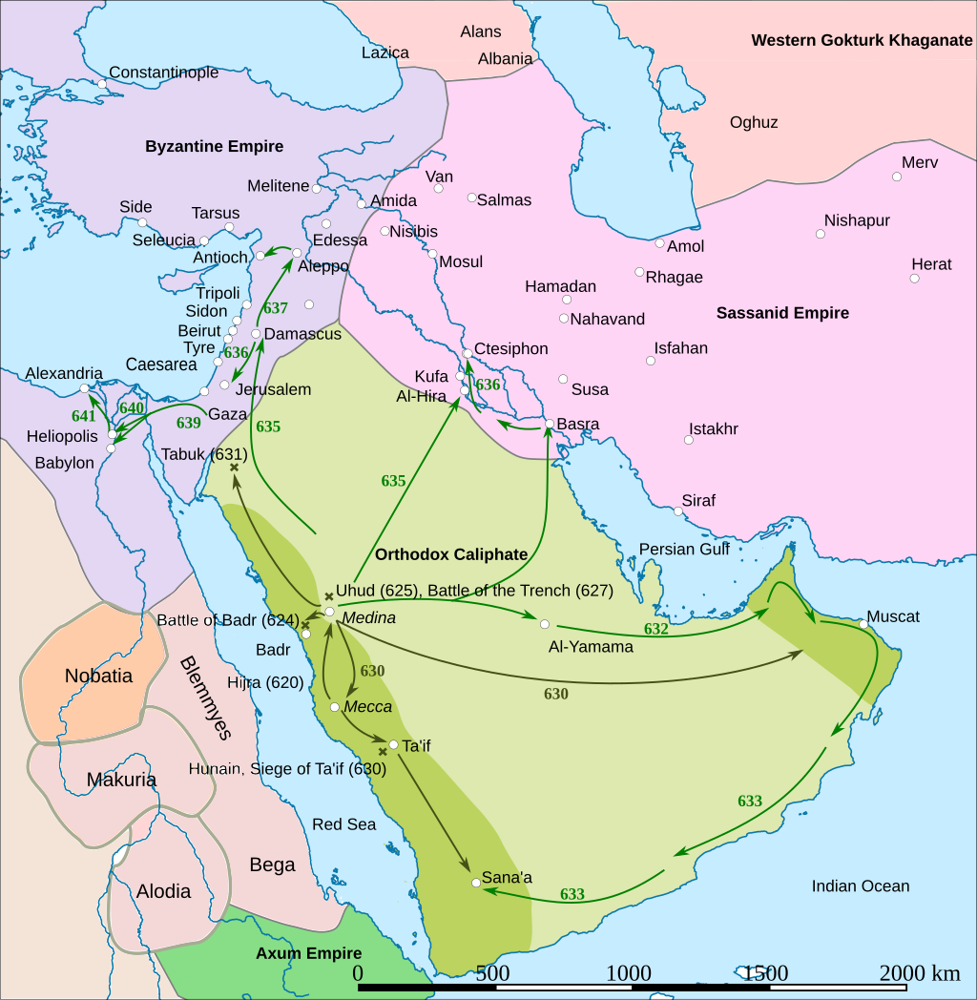
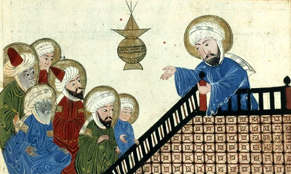

Prophet Muhammad (ﷺ)
Early life:-
Muhammad ibn Abdullah ibn Abd al-Muttalib ibn Hashim[28] was born in Mecca[29][1] c. 570,[1] and his
birthday is believed to be in the month of Rabi' al-Awwal.[30] He belonged to the Banu Hashim clan of the
Quraysh tribe, which was a dominant force in western Arabia.[31] While his clan was one of the more
distinguished in the tribe, it seems to have experienced a lack of prosperity during his early years.[32][e]
According to Muslim tradition, Muhammad was a hanif, someone who professed monotheism in pre-Islamic Arabia.[33]
He is also claimed to have been a descendant of Ishmael, son of Abraham.[34]
The name Muhammad means "praiseworthy" in Arabic and it appears four times in the Quran.[35] He was also known
as "al-Amin" (lit. 'faithful') when he was young; however, historians differ as to whether it was given by
people as a reflection of his nature[36] or was simply a given name from his parents, i.e., a masculine form of
his mother's name "Amina".[37] Muhammad acquired the kunya of Abu al-Qasim later in his life after the birth of
his son Qasim, who died two years afterwards.[38]
Islamic tradition states that Muhammad's birth year coincided with the Year of the Elephant, when Abraha, the
Aksumite viceroy in the former Himyarite Kingdom, unsuccessfully attempted to conquer Mecca.[39] Recent studies,
however, challenge this notion, as other evidence suggests that the expedition, if it had occurred, would have
transpired substantially before Muhammad's birth.[40] Later Muslim scholars presumably linked Abraha's renowned
name to the narrative of Muhammad's birth to elucidate the unclear passage about "the men of elephants" in Quran
105:1–5.[41][42] The Oxford Handbook of Late Antiquity deems the tale of Abraha's war elephant expedition as a
myth.[43]
Muhammad's father, Abdullah, died almost six months before he was born.[44] Muhammad then stayed with his foster
mother, Halima bint Abi Dhu'ayb, and her husband until he was two years old. At the age of six, Muhammad lost
his biological mother Amina to illness and became an orphan.[45][46][47] For the next two years, until he was
eight years old, Muhammad was under the guardianship of his paternal grandfather, Abd al-Muttalib, until the
latter's death. He then came under the care of his uncle, Abu Talib,[48] the new leader of the Banu Hashim.[48]
Abu Talib's brothers assisted with Muhammad's learning – Hamza, the youngest, trained Muhammad in archery,
swordsmanship, and martial arts. Another uncle, Abbas, provided Muhammad with a job leading caravans on the
northern segment of the route to Syria.[49]
The historical record of Mecca during Muhammad's early life is limited and fragmentary, making it difficult to
distinguish between fact and legend.[50] Several Islamic narratives relate that Muhammad, as a child, went on a
trading trip to Syria with his uncle Abu Talib and met a monk named Bahira, who is said to have then foretold
his prophethood.[51] There are multiple versions of the story with details that contradict each other.[52] All
accounts of Bahira and his meeting with Muhammad have been considered fictitious by modern historians[53] as
well as by some medieval Muslim scholars such as al-Dhahabi.[54]

Sometime later in his life, Muhammad proposed marriage to his cousin and first love, Fakhitah bint Abi Talib.
But likely owing to his poverty, his proposal was rejected by her father, Abu Talib, who chose a more
illustrious suitor.[55][56] When Muhammad was 25, his fortunes turned around; his business reputation caught the
attention of his 40-year-old distant relative Khadija, a wealthy businesswoman who had staked out a successful
career as a merchant in the caravan trade industry. She asked him to take one of her caravans into Syria, after
which she was so impressed by his competence in the expedition that she proposed marriage to him; Muhammad
accepted her offer and remained monogamous with her until her death.[57][58][59]
In 605, the Quraysh decided to roof the Kaaba, which had previously consisted only of walls. A complete rebuild
was needed to accommodate the new weight. Amid concerns about upsetting the deities, a man stepped forth with a
pickaxe and exclaimed, "O goddess! Fear not! Our intentions are only for the best." With that, he began
demolishing it. The anxious Meccans awaited divine retribution overnight, but his unharmed continuation the next
day was seen as a sign of heavenly approval. According to a narrative collected by Ibn Ishaq, when it was time
to reattach the Black Stone, a dispute arose over which clan should have the privilege. It was determined that
the first person to step into the Kaaba's court would arbitrate. Muhammad took on this role, asking for a cloak.
He placed the stone on it, guiding clan representatives to jointly elevate it to its position. He then
personally secured it within the wall.[61][62]
Medinan Years:-
Building the religious community in Medina:-
A few days after settling in Medina, Muhammad negotiated for the purchase of a piece of land; upon
this plot, the
Muslims began constructing a building that would become Muhammad's residence as well as a community gathering
place (masjid) for prayer (salat). Tree trunks were used as pillars to hold up the roof, and there was no fancy
pulpit; instead, Muhammad stood on top of a small stool to speak to the congregation. The structure was
completed after about seven months in April 623, becoming the first Muslim building and mosque; its northern
wall had a stone marking the direction of prayer (qibla) which was Jerusalem at that time. Muhammad used the
building to host public and political meetings, as well as a place for the poor to gather to receive alms, food,
and care. Christians and Jews were also allowed to participate in community worship at the mosque. Initially,
Muhammad's religion had no organized way to call the community to prayer in a coordinated manner. To resolve
this, Muhammad had considered using a ram's horn (shofar) like the Jews or a wooden clapper like the Christians,
but one of the Muslims in the community had a dream where a man in a green cloak told him that someone with a
loud booming voice should announce the service by crying out "allahu akbar" ('God is greater') to remind Muslims
of their top priority; when Muhammad heard about this dream, he agreed with the idea and selected Bilal, a
former Abyssinian slave known for his loud voice.[159]
Constitution of Medina:-
The text, referred to by contemporary popular Islamic writers as the Constitution of Medina, was a
legal covenant
or likely proclamation unilaterally written by Muhammad. Ibn Ishaq, following his narration of the Hijrah,
maintains that Muhammad penned the text and divulges its content without relying on the Islamic corroboration
system.[160] The appellation is generally deemed imprecise, as the text neither established a state nor enacted
Quranic statutes,[161] but rather addressed tribal matters.[162] While scholars from both the West and the
Muslim world agree on the text's authenticity, disagreements persist on whether it was a treaty or a unilateral
proclamation by Muhammad,[i] the number of documents it comprised, the primary parties, the specific timing of
its creation (or that of its constituent parts), whether it was drafted before or after Muhammad's removal of
the three leading Jewish tribes of Medina, and the proper approach to translating it.[160][164]
Beginning of armed conflict:-
*Following the emigration, the people of Mecca seized property of Muslim emigrants to Medina.[166] War
would
later
break out between the people of Mecca and the Muslims. Muhammad delivered Quranic verses permitting Muslims to
fight the Meccans.[167] According to the traditional account, on 11 February 624, while praying in the Masjid
al-Qiblatayn in Medina, Muhammad received revelations from God that he should be facing Mecca rather than
Jerusalem during prayer. Muhammad adjusted to the new direction, and his companions praying with him followed
his lead, beginning the tradition of facing Mecca during prayer.[168]
*Muhammad ordered a number of raids to capture Meccan caravans, but only the 8th of them, the Raid on Nakhla,
resulted in actual fighting and capture of booty and prisoners.[27] In March 624, Muhammad led some three
hundred
warriors in a raid on a Meccan merchant caravan. The Muslims set an ambush for the caravan at Badr.[169] Aware
of
the plan, the Meccan caravan eluded the Muslims. A Meccan force was sent to protect the caravan and went on to
confront the Muslims upon receiving word that the caravan was safe.[170] Due to being outnumbered more than
three to
one, a spirit of fear ran throughout the Muslim camp; Muhammad tried to boost their morale by telling them he
had a
dream in which God promised to send 1,000 angels to fight with them.[171][172] From a tactical standpoint,
Muhammad
placed troops in front of all of the wells so the Quraysh would have to fight for water, and positioned other
troops
in such a way that would require the Quraysh to fight uphill while also facing the sun.[171] The Battle of Badr
commenced, and the Muslims ultimately won, killing at least forty-five Meccans with fourteen Muslims dead. They
also
succeeded in killing many Meccan leaders, including Abu Jahl.[173] Seventy prisoners had been acquired, many of
whom
were ransomed.[174][175][176] Muhammad and his followers saw the victory as confirmation of their faith[32] and
Muhammad ascribed the victory to the assistance of an invisible host of angels. The Quranic verses of this
period,
unlike the Meccan verses, dealt with practical problems of government and issues like the distribution of
spoils.[177]
*The victory strengthened Muhammad's position in Medina and dispelled earlier doubts among his followers.[178]
As a
result, the opposition to him became less vocal. Pagans who had not yet converted were very bitter about the
advance
of Islam. Two pagans, Asma bint Marwan of the Aws Manat tribe and Abu 'Afak of the 'Amr b. 'Awf tribe, had
composed
verses taunting and insulting the Muslims. They were killed by people belonging to their own or related clans,
and
Muhammad did not disapprove of the killings. This report, however, is considered by some to be a
fabrication.[179]
Most members of those tribes converted to Islam, and little pagan opposition remained.[180]
*Muhammad expelled from Medina the Banu Qaynuqa, one of three main Jewish tribes,[32] but some historians
contend
that the expulsion happened after Muhammad's death.[181] According to al-Waqidi, after Abd Allah ibn Ubayy spoke
for
them, Muhammad refrained from executing them and commanded that they be exiled from Medina.[182] Following the
Battle of Badr, Muhammad also made mutual-aid alliances with a number of Bedouin tribes to protect his community
from attacks from the northern part of Hejaz.[32]
Conflicts with Jewish:-
*Once the ransom arrangements for the Meccan captives were finalized, he initiated a siege on the Banu
Qaynuqa,[183] regarded as the weakest and wealthiest of Medina's three main Jewish tribes.[184][185] Muslim
sources provide different reasons for the siege, including an altercation involving Hamza and Ali in the Banu
Qaynuqa market, and another version by Ibn Ishaq, which tells the story of a Muslim woman being pranked by a
Qaynuqa goldsmith.[185][186] Regardless of the cause, the Banu Qaynuqa sought refuge in their fort, where
Muhammad blockaded them, cutting off their access to food supplies. The Banu Qaynuqa requested help from their
Arab allies, but the Arabs refused since they were supporters of Muhammad.[187] After roughly two weeks, the
Banu Qaynuqa capitulated without engaging in combat.[184][185]
*Following the surrender of the Qaynuqa, Muhammad was moving to execute the men of the tribe when Abdullah ibn
Ubayy, a Muslim Khazraj chieftain who had been aided by the Qaynuqa in the past encouraged Muhammad to show
leniency. In a narrated incident, Muhammad turned away from Ibn Ubayy, but undeterred, the chieftain grasped
Muhammad's cloak, and refused to let go until Muhammad agreed to treat the tribe leniently. Despite being
angered by the incident, Muhammad spared the Qaynuqa, stipulating that they must depart Medina within three days
and relinquish their property to the Muslims, with a fifth (khums) being retained by Muhammad.[188][189]
*Back in Medina, Ka'b ibn al-Ashraf, a wealthy half-Jewish man from Banu Nadir and staunch critic of Muhammad,
had just returned from Mecca after producing poetry that mourned the death of the Quraysh at Badr and aroused
them to retaliate.[190][191] When Muhammad learned of this incitement against the Muslims, he asked his
followers, "Who is ready to kill Ka'b, who has hurt God and His apostle?"[192] Ibn Maslamah offered his
services, explaining that the task would require deception. Muhammad did not contest this. He then gathered
accomplices, including Ka'b's foster brother, Abu Naila. They pretended to complain about their post-conversion
hardships, persuading Ka'b to lend them food. On the night of their meeting with Ka'b, they murdered him when he
was caught off-guard.[193]
Meccan retaliation:-
*In 625, the Quraysh, wearied by Muhammad's continuous attacks on their caravans, decided to take
decisive
action. Led by Abu Sufyan, they assembled an army to oppose Muhammad.[183][194] Upon being alerted by his scout
about the impending threat, Muhammad convened a war council. Initially, he considered defending from the city
center, but later decided to meet the enemy in open battle at Mount Uhud, following the insistence of the
younger faction of his followers.[195] As they prepared to depart, the remaining Jewish allies of Abdullah ibn
Ubayy offered their help, which Muhammad declined.[196] Despite being outnumbered, the Muslims initially held
their ground but lost advantage when some archers disobeyed orders. As rumors of Muhammad's death spread, the
Muslims started to flee, but he had only been injured and managed to escape with a group of loyal adherents.
Satisfied they had restored their honor, the Meccans returned to Mecca.[183][197] Mass casualties suffered by
the Muslims in the Battle of Uhud resulted in many wives and daughters being left without a male protector, so
after the battle, Muhammad received revelation allowing Muslim men to have up to four wives each, marking the
beginning of polygyny in Islam.[198]
Sometime later, Muhammad found himself needing to pay blood money to Banu Amir. He sought monetary help from the
Jewish tribe of Banu Nadir,[199][200][201] and they agreed to his request.[200] However, while waiting, he
departed from his companions and disappeared. When they found him at his home, according to Ibn Ishaq, Muhammad
disclosed that he had received a divine revelation of a planned assassination attempt on him by the Banu Nadir,
which involved dropping a boulder from a rooftop. Muhammad then initiated a siege on the tribe;[202][203] during
this time he also commanded the felling and burning of their palm groves,[204] which was an unambiguous symbol
of declaring war in Arabia.[205] After a fortnight or so, the Banu Nadir capitulated.[206] They were directed to
vacate their land and permitted to carry only one camel-load of goods for every three people.[207] From the
spoils, Muhammad claimed a fertile piece of land where barley sprouted amongst palm trees.[208]
Raid on the Banu Mustaliq:-
*Upon receiving a report that the Banu Mustaliq were planning an attack on Medina, Muhammad's troops
executed a
surprise attack on them at their watering place, causing them to flee rapidly. In the confrontation, the Muslims
lost one man, while the enemy suffered ten casualties.[209] As part of their triumph, the Muslims seized 2,000
camels, 500 sheep and goats, and 200 women from the tribe.[210] The Muslim soldiers desired the captive women,
but they also sought ransom money. They asked Muhammad about using coitus interruptus to prevent pregnancy, to
which Muhammad replied, "You are not under any obligation to forbear from that..."[211][212] Later, envoys
arrived in Medina to negotiate the ransom for the women and children. Despite having the choice, all of them
chose to return to their country instead of staying.[211][212]
Battle of the Trench:-
With the help of the exiled Banu Nadir, the Quraysh military leader Abu Sufyan mustered a force of
10,000 men.
Muhammad prepared a force of about 3,000 men and adopted a form of defense unknown in Arabia at that time; the
Muslims dug a trench wherever Medina lay open to cavalry attack. The idea is credited to a Persian convert to
Islam, Salman the Persian. The siege of Medina began on 31 March 627 and lasted two weeks.[213] Abu Sufyan's
troops were unprepared for the fortifications, and after an ineffectual siege, the coalition decided to return
home.[214] The Quran discusses this battle in sura Al-Ahzab, in verses 33:9–27.[215] During the battle, the
Jewish tribe of Banu Qurayza, located to the south of Medina, entered into negotiations with Meccan forces to
revolt against Muhammad. Although the Meccan forces were swayed by suggestions that Muhammad was sure to be
overwhelmed, they desired reassurance in case the confederacy was unable to destroy him. No agreement was
reached after prolonged negotiations, partly due to sabotage attempts by Muhammad's scouts.[216] After the
coalition's retreat, the Muslims accused the Banu Qurayza of treachery and besieged them in their forts for 25
days. The Banu Qurayza eventually surrendered; according to Ibn Ishaq, all the men apart from a few converts to
Islam were beheaded, while the women and children were enslaved.[217][218] Walid N. Arafat and Barakat Ahmad
have disputed the accuracy of Ibn Ishaq's narrative.[219] Arafat believes that Ibn Ishaq's Jewish sources,
speaking over 100 years after the event, conflated this account with memories of earlier massacres in Jewish
history; he notes that Ibn Ishaq was considered an unreliable historian by his contemporary Malik ibn Anas, and
a transmitter of "odd tales" by the later Ibn Hajar.[220] Ahmad argues that only some of the tribe were killed,
while some of the fighters were merely enslaved.[221][222] Watt finds Arafat's arguments "not entirely
convincing", while Meir J. Kister has refuted the arguments of Arafat and Ahmad.[223]
In the siege of Medina, the Meccans exerted the available strength to destroy the Muslim community. The failure
resulted in a significant loss of prestige; their trade with Syria vanished.[224] Following the Battle of the
Trench, Muhammad made two expeditions to the north, both ended without any fighting.[32] While returning from
one of these journeys (or some years earlier according to other early accounts), an accusation of adultery was
made against Aisha, Muhammad's wife. Aisha was exonerated from accusations when Muhammad announced he had
received a revelation confirming Aisha's innocence and directing that charges of adultery be supported by four
eyewitnesses (sura 24, An-Nur).[225]
Invasion of the Banu Qurayza:-
On the day the Quraysh forces and their allies withdrew, Muhammad, while bathing at his wife's abode,
received a
visit from the angel Gabriel, who instructed him to attack the Jewish tribe of Banu Qurayza.[226][227][228]
Islamic sources recount that during the preceding Meccan siege, the Quraysh leader Abu Sufyan incited the
Qurayza to attack the Muslims from their compound, but the Qurayza demanded the Quraysh to provide 70 hostages
from among themselves to ascertain their commitment to their plans, as proposed by Muhammad's secret agent Nuaym
ibn Masud. Abu Sufyan refused their requirement.[229] Nevertheless, later accounts claim that 11 Jewish
individuals from the Qurayza were indeed agitated and acted against Muhammad, though the course of event may
have been dramatized within the tradition.[230][227]
Citing the intrigue of the Qurayza, Muhammad besieged the tribe, though the tribe denied the
charges.[231][232][233] However, there are sources that say the Banu Qurayza broke the treaty with Muhammad and
assisted the enemies of Muslims during the Battle of the Trench.[234] As the situation turned against the
Qurayza, the tribe proposed to leave their land with one loaded camel each, but Muhammad refused. They then
offered to leave without taking anything, but this was rejected as well, with Muhammad insisting on their
unconditional surrender.[235][231] The Qurayza subsequently requested to confer with one of their Aws allies who
had embraced Islam, leading to the arrival of Abu Lubaba. When asked about Muhammad's intentions, he gestured
towards his throat, indicating an imminent massacre. He immediately regretted his indiscretion and tied himself
to one of the Mosque pillars as a form of penance.[236][235]
After a 25-day siege, the Banu Qurayza surrendered. The Muslims of Banu Aws entreated Muhammad for leniency,
prompting him to suggest that one of their own should serve as the judge, which they accepted. Muhammad assigned
the role to Sa'd ibn Mu'adh, a man nearing death from an infection in his wounds from the previous Meccan
siege.[237][236][238] He pronounced that all the men should be put to death, their possessions to be distributed
among Muslims, and their women and children to be taken as captives. Muhammad approved this pronouncement saying
it aligned with the God's judgement.[236][237] Consequently, 600–900 men of Banu Qurayza were executed. The
women and children were distributed as slaves, with some being transported to Najd to be sold. The proceeds were
then utilized to purchase weapons and horses for the Muslims.[239]
Incidents with the Banu Fazara
A few months after the conflict with the Banu Qurayza, Muhammad organized a caravan to conduct trade
in Syria.
Zayd ibn Haritha was tasked with guarding the convoy. When they journeyed through the territory of Banu Fazara,
whom Zayd had raided in the past, the tribe seized the opportunity for revenge, attacking the caravan and
injuring him. Upon his return to Medina, Muhammad ordered Zayd to lead a punitive operation against the Fazara
in which their matriarch Umm Qirfa was captured and brutally executed.[240][241]
Treaty of Hudaybiyya:-
Early in 628, following a dream of making an unopposed pilgrimage to Mecca, Muhammad embarked on the
journey. He was dressed in his customary pilgrim attire and was accompanied by a group of followers.[243] Upon
reaching Hudaybiyya, they encountered Quraysh emissaries who questioned their intentions. Muhammad explained
they had come to venerate the Kaaba, not to fight.[244] He then sent Uthman, Abu Sufyan's second cousin, to
negotiate with the Quraysh. As the negotiations were prolonged, rumors of Uthman's death began to spark,
prompting Muhammad to call his followers to renew their oaths of loyalty. Uthman returned with news of a
negotiation impasse. Muhammad remained persistent. In the end, the Quraysh sent Suhayl ibn Amr, an envoy with
full negotiation powers. Following lengthy discussions, a treaty was finally enacted,[245] with terms:
1:A ten-year truce was established between both parties.
2:If a Qurayshite came to Muhammad's side without his guardian's allowance, he was to be returned to the
Quraysh; yet, if a Muslim came to the Quraysh, he would not be surrendered to Muhammad.
3:Any tribes interested in forming alliances with Muhammad or the Quraysh were free to do so. These alliances
were also protected by the ten-year truce.
4:Muslims were then required to depart back to Medina, however, they were permitted to make the Umrah pilgrimage
in the coming year.[245][244]
Final years:-
Conquest of Mecca:-
The truce of Hudaybiyyah was enforced for two years. The tribe of Banu Khuza'ah had good relations
with Muhammad, whereas their enemies, the Banu Bakr, had allied with the Meccans. A clan of the Bakr made a
night raid against the Khuza'ah, killing a few of them. The Meccans helped the Banu Bakr with weapons and,
according to some sources, a few Meccans also took part in the fighting. After this event, Muhammad sent a
message to Mecca with three conditions, asking them to accept one of them. These were: either the Meccans would
pay blood money for the slain among the Khuza'ah tribe, they disavow themselves of the Banu Bakr, or they should
declare the truce of Hudaybiyyah null.[261][262]
The Meccans replied that they accepted the last condition.[261] Soon they realized their mistake and sent Abu
Sufyan to renew the Hudaybiyyah treaty, a request that was declined by Muhammad.

Muhammad began to prepare for a campaign.[263] In 630, Muhammad marched on Mecca with 10,000 Muslim converts.
With minimal casualties, Muhammad seized control of Mecca.[264] He declared an amnesty for past offences, except
for ten men and women who were "guilty of murder or other offences or had sparked off the war and disrupted the
peace".[265] Some of these were later pardoned[266] Most Meccans converted to Islam and Muhammad proceeded to
destroy all the statues of Arabian gods in and around the Kaaba.[267] According to reports collected by Ibn
Ishaq and al-Azraqi, Muhammad personally spared paintings or frescos of Mary and Jesus, but other traditions
suggest that all pictures were erased.[268] The Quran discusses the conquest of Mecca.[215][269]
Subduing the Hawazin and Thaqif and the expedition to Tabuk:-
Upon learning that Mecca had fallen to the Muslims, the Banu Hawazin gathered their entire tribe,
including their
families, to fight. They are estimated to have around 4,000 warriors.[270][271] Muhammad led 12,000 soldiers to
raid them, but they surprised him at the valley of Hunayn.[272] The Muslims overpowered them and took their
women, children and animals.[273] Muhammad then turned his attention to Taif, a city that was famous for its
vineyards and gardens. He ordered them to be destroyed and besieged the city, which was surrounded by walls.
After 15–20 days of failing to breach their defenses, he abandoned the attempts.[274][275]

When he divided the plentiful loot acquired at Hunayn among his soldiers, the rest of the Hawazin converted to
Islam[276] and implored Muhammad to release their children and women, reminding him that he had been nursed by
some of those women when he was a baby. He complied but held on to the rest of the plunder. Some of his men
opposed giving away their portions, so he compensated them with six camels each from subsequent raids.[277]
Muhammad distributed a big portion of the booty to the new converts from the Quraysh. Abu Sufyan and two of his
sons, Mu'awiya and Yazid, got 100 camels individually.[278][279] The Ansar, who had fought bravely in the
battle, but received close to nothing, were unhappy with this.[280][281] One of them remarked, "It is not with
such gifts that one seeks God's face." Disturbed by this utterance, Muhammad retorted, "He changed color."[278]
Roughly 10 months after he captured Mecca, Muhammad took his army to attack the wealthy border provinces of
Byzantine Syria. Several motives are proposed, including avenging the defeat at Mu'tah and earning vast
booty.[282][283] Because of the drought and severe heat at that time, some of the Muslims refrained from
participating. This led to the revelation of Quran 9:38 which rebuked those slackers.[284] When Muhammad and his
army reached Tabuk, there were no hostile forces present.[285] However, he was able to force some of the local
chiefs to accept his rule and pay jizya. A group under Khalid ibn Walid that he sent for a raid also managed to
acquire some booty including 2,000 camels and 800 cattle.[286]
The Hawazin's acceptance of Islam resulted in Taif losing its last major ally.[287] After enduring a year of
unrelenting thefts and attacks from the Muslims following the siege, the people of Taif, known as the Banu
Thaqif, finally reached a tipping point and acknowledged that embracing Islam was the most sensible path for
them.[288][289][290]
Farewell pilgrimage:-
On February 631, Muhammad received a revelation granting idolaters four months of grace, after which
the
Muslims would attack, kill, and plunder them wherever they met.[291][292]

During the 632 pilgrimage season, Muhammad personally led the ceremonies and gave a sermon. Among the key
points highlighted are said to have been the prohibition of usury and vendettas related to past murders from
the pre-Islamic era; the brotherhood of all Muslims; and the adoption of twelve lunar months without
intercalation.[293][294]
Death:-
After praying at the burial site in June 632, Muhammad suffered a dreadful headache that made him cry in
pain.[295] He continued to spend the night with each of his wives one by one,[296] but he fainted in Maymunah's
hut.[297] He requested his wives to allow him to stay in Aisha's hut. He could not walk there without leaning on
Ali and Fadl ibn Abbas, as his legs were trembling. His wives and his uncle al-Abbas fed him an Abyssinian
remedy when he was unconscious.[298] When he came to, he inquired about it, and they explained that they were
afraid that such a severe fever was a result of pleurisy. He replied that God would not afflict him with such a
vile disease, and ordered all the women to also take the remedy.[299] According to various sources, including
Sahih al-Bukhari, Muhammad said that he felt his aorta being severed because of the food he ate at
Khaybar.[300][260] On 8 June 632, Muhammad died.[301][302] In his last moments, he reportedly uttered:
O God, forgive me and have mercy on me; and let me join the highest companions.[303][304][305]
— Muhammad
Historian Alfred T. Welch, while presuming the illness to be ordinary Medinan fever, with death requiring a
dangerous level of comorbidity, restrains his speculation to physical and mental fatigue.[306]
Go To Short Details